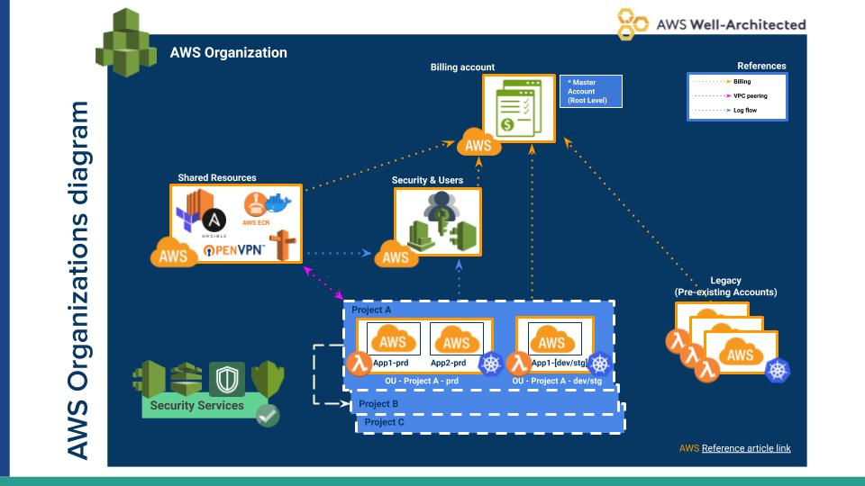

Files/Folders Organization ¶
The following block provides a brief explanation of the chosen files/folders layout:
+ apps-devstg/ (resources for Apps dev & stg account)
...
+ apps-prd/ (resources for Apps Prod account)
...
+ root-org/ (resources for the root-org account)
...
+ security/ (resources for the security + users account)
...
+ shared/ (resources for the shared account)
...
Configuration files are organized by environments (e.g. dev, stg) and service type (identities, sec, network, etc) to keep any changes made to them separate. Within each of those folders you should find the Terraform files that are used to define all the resources that belong to such environment.

figure 1: AWS Organization Architecture Diagram (just as reference).
Under every account folder you will see a service layer structure similar to the following:
.
├── apps-devstg
│ ├── 10_databases_mysql --
│ ├── 10_databases_pgsql --
│ ├── 1_tf-backend
│ ├── 2_identities
│ ├── 3_network
│ ├── 4_security
│ ├── 4_security_compliance --
│ ├── 5_dns
│ ├── 6_notifications
│ ├── 7_cloud-nuke
│ ├── 8_k8s_eks --
│ ├── 8_k8s_kops --
│ ├── 9_backups --
│ ├── 9_storage --
│ └── config
├── apps-prd
│ ├── 1_tf-backend --
│ ├── 2_identities --
│ ├── 3_network --
│ ├── 4_security --
│ ├── 4_security_compliance --
│ ├── 5_dns --
│ ├── 6_notifications --
│ ├── 9_backups --
│ └── config
├── root-org
│ ├── 1_tf-backend
│ ├── 2_identities
│ ├── 3_organizations
│ ├── 4_security
│ ├── 4_security_compliance --
│ ├── 5_cost-mgmt
│ ├── 6_notifications
│ └── config
├── security
│ ├── 1_tf-backend
│ ├── 2_identities
│ ├── 4_security
│ ├── 4_security_compliance --
│ ├── 6_notifications
│ └── config
└── shared
├── 1_tf-backend
├── 2_identities
├── 3_network
├── 4_security
├── 4_security_compliance --
├── 5_dns
├── 6_notifications
├── 7_vpn-server
├── 8_container_registry
└── config
NOTE: As a convention folders with the -- suffix reflect that the resources are not currently
created in AWS, basically they've been destroyed or not yet exist.
Such separation is meant to avoid situations in which a single folder contains a lot of resources.
That is important to avoid because at some point, running terraform plan or apply stats taking too long and that
becomes a problem.
This organization also provides a layout that is easier to navigate and discover. You simply start with the accounts at the top level and then you get to explore the resource categories within each account.
Pre-requisites ¶
Makefile ¶
- We rely on
Makefilesas a wrapper to run terraform commands that consistently use the same config files. - You are encouraged to inspect those Makefiles to understand what's going on.
Terraform ¶
- Install terraform >= v0.12.20
- Run
terraform versionto check - NOTE: Most
Makefilesalready grant the recs via Dockerized cmds (https://hub.docker.com/repository/docker/binbash/terraform-resources)
Remote State ¶
In the tf-backend folder you should find all setup scripts or configuration files that need to be run before
you can get to work with anything else.
IMPORTANT: THIS IS ONLY NEEDED IF THE BACKEND WAS NOT CREATED YET. IF THE BACKEND ALREADY EXISTS YOU JUST USE IT.
Configuration ¶
- Config files can be found in under each 'config' folder.
- File
backend.configcontains TF variables that are mainly used to configure TF backend but sinceprofileandregionare defined there, we also use them to inject those values into other TF commands. - File
base.configcontains TF variables that we inject to TF commands such as plan or apply and which cannot be stored inbackend.configdue to TF restrictions. - File
extra.configsimilar tobase.configbut variables declared here are not used by all sub-directories.
AWS Profile ¶
- File
backend.configwill inject the profile name that TF will use to make changes on AWS. - Such profile is usually one that relies on another profile to assume a role to get access to each corresponding account.
- File
@doc/binbash-aws-org-configwill be considered to be appended to your.aws/configfile note that.aws/configwill depend on the IAM profiles declared at your.aws/credentials - Read the following page to understand how to set up a profile to assume a role => https://docs.aws.amazon.com/cli/latest/userguide/cli-roles.html